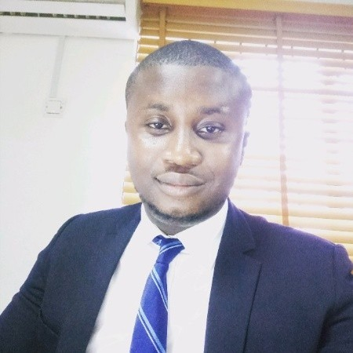

Chukwuma Kingsley Onwuneme
Executive Summary
As a dynamic and skilled graduate, I am excited to join your organization and contribute to
its managerial goals and targets utilizing my exceptional communication, organizational, and
analytical abilities. With a contagious enthusiasm for working with people, I have established
strong relationships with colleagues and customers. I am adept at handling multiple projects
and assignments with unwavering commitment and consistency. My ultimate career
objective is to continually expand my expertise while leveraging my experience and
knowledge to benefit any employer.
Key Technical and Soft Skills
- Web Developer
- IT Technical Support
- Proficient in Microsoft office
- Deployment of Electronic Document management system
- Document scanning and Digitization
- Digital Archiving & Preservation
- Deployment of Physical Archives (Mobile Shelving Systems,Archive Boxes and Racks)
- Application Management (EDAS, M-FILES, E-STOCK,SAGE EVOLUTION)
- Managing tight deadlines
- Strong communication skills
Professional Experience
Greenwich Registrars Limited
- IT Technical Support & EDMS Professional
- Introduction of Electronic
Document Management System and Deployment of
E-Archiving solution.
- Developed new
pattern for Archives and Records Unit for different
organizations
- Project Manager for EDMS and Document Management Team.
- Developed technical proposals
and presentations for Document Management Services
- Developed documents for Tender/Bid offers for
Document Management services
- Support local IT infrastructure including servers,
security, networking, storage systems and desktops.
- Performed second-level support
for all workstation and server class systems.
- Configured, maintained and performance analysis of
enterprise class server systems.
- Conducted computer diagnostics to investigate
and resolve problems and provide technical assistance and
support
- Developed training materials and procedures.
- Set up equipment for employee use.
- Answered user inquiries regarding computer
software and hardware operation.
- Provided recommendations for resolving defects.
Archive Global Management Limited
- EDMS Administrator & IT Support Administrator
- Deployment of
Electronic Document management system EDMS (M-files) for Client Companies.
- Deployment of Physical Archives
(Mobile shelving systems, Archive boxes and Racks).
- Management strategic team for the deployment of document
management projects for NAFDAC, NPGMC etc.
- Installed and performed repairs to hardware, software and peripheral equipment following design and installation
specifications
- Oversaw local IT infrastructure including servers,
security, networking, storage systems and desktops.
- Conducted computer diagnostics to investigate and resolve problems and provide technical assistance and
support.
- Client support and management
via phone calls, email and other channels of communication
- Established requirements for new systems and modifications.
- Conducted a technical training section for client companies
- Maintenance & update of company website (www.archiveglobalmgt.com)
- Effective management of social media channels
Educational Background
Michael Okpara University of Agriculture
- Bachelor’s degree in Computer Science - Second Class Lower Honors
Nsu Comprehensive Umuanunu
- West Africa Examination Council Certificate (WAEC)
Projects and Key Performance
Providus Bank
- Delivered a comprehensive technical presentation on the EDMS project, showcasing my ability to
effectively communicate complex technical concepts to a diverse audience.
- Successfully secured a multi-million naira contract through the effective delivery of a technically
sound presentation and the proficient packaging of the EDMS product.
NPGMC Ijanikan
- Successfully oversaw the digitization, scanning, and archiving of a voluminous collection of over
2.5 million documents.
- Collaborated within an EDMS team to successfully manage and deploy an Electronic Document
Management System (EDMS)
NAFDAC
- Designed and executed a streamlined document classification framework, and successfully
oversaw the integration and deployment of a document management system across the
organization.
- Played an integral role in the digitization of documents and the implementation of an Electronic
Document Management System (EDMS) to improve the efficiency and accuracy of record keeping
processes.
MainStreet Trustees & Asset Management
- Led the development of document classification and workflow design in EDMS software,
employing technical expertise and analytical skills to design an efficient and user-friendly system
that meets business requirements and enhances productivity.
- Served as the Project Manager for the successful implementation of an Electronic Document
Management System (EDMS), overseeing project planning, execution, and delivery while ensuring
alignment with organizational objectives and stakeholder expectations.
Contact Me
About Me